00. 目录01. 学习目标02. 编辑器gedit介绍03. 什么是vi(vim)04. vim工作模式4.1 命令模式4.2 编辑模式4.3 末行模式05. vim教程06. vim基本操作07. vim实用操作7.1 命令模式下的操作7.2 末行模式下的操作08. GCC编译器简介09. GCC工作流程和常用选项10. 静态连接和动态连接11. 静态库和动态库简介12. 静态库制作和使用13. 动态库制作和使用14. GDB调试器14.1 GDB简介14.2 生成调试信息14.3 启动GDB14.3 显示源代码 14.4 断点操作14.5 条件断点14.6 维护断点 14.7 调试代码14.8 数据查看14.9 自动显示14.10 查看修改变量的值
gedit是一个GNOME桌面环境下兼容UTF-8的文本编辑器。它使用GTK+编写而成，因此它十分的简单易用，有良好的语法高亮，对中文支持很好，支持包括gb2312、gbk在内的多种字符编码。gedit是一个自由软件。
这是 Linux 下的一个纯文本编辑器,但你也可以把它用来当成是一个集成开发环境 (IDE), 它会根据不同的语言高亮显现关键字和标识符。
gedit是一个Linux环境下的文本编辑器，类似windows下的写字板程序，在不需要特别复杂的编程环境下，作为基本的文本编辑器比较合适。
deng@itcast:~$ gedit txt &
打开gedit图形界面如下：
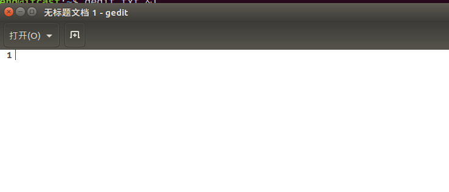
vi (Visual interface)编辑器是 Linux 系统中最常用的文本编辑器，vi 在Linux界有编辑器之神的美誉，几乎所有的 Linux 发行版中都包含 vi 程序。
vi 工作在字符模式下，不需要图形界面，非常适合远程及嵌入式工作，是效率很高的文本编辑器，尽管在 Linux 上也有很多图形界面的编辑器可用，但vi的功能是那些图形编辑器所无法比拟的。
vim 是 vi 的升级版，它不仅兼容 vi 的所有指令，而且还有一些新的特性，例如 vim 可以撤消无限次、支持关键词自动完成、可以用不同的颜色来高亮你的代码。vim 普遍被推崇为类 vi 编辑器中最好的一个。
vim键盘
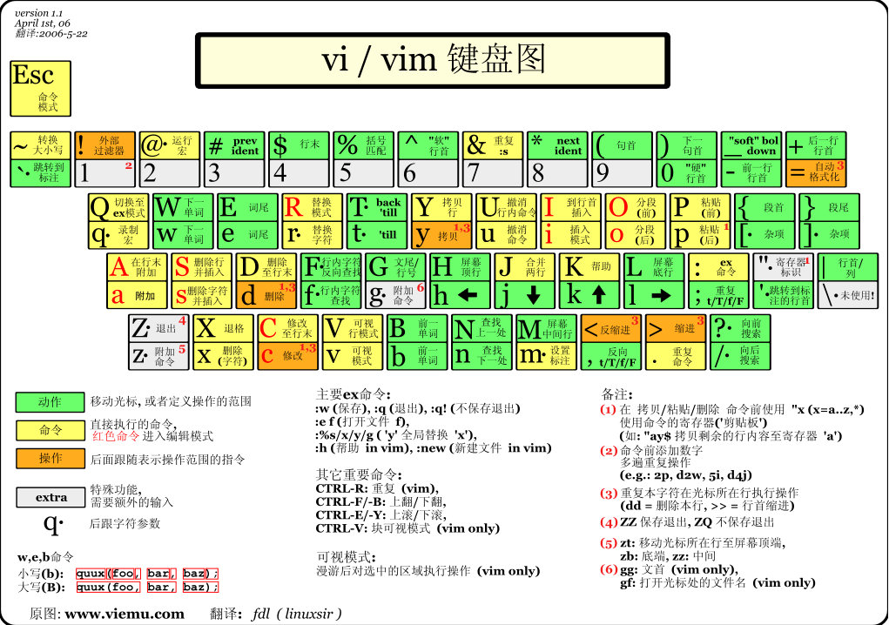
vi有三种基本工作模式: 命令模式、文本输入模式(编辑模式)、末行模式。
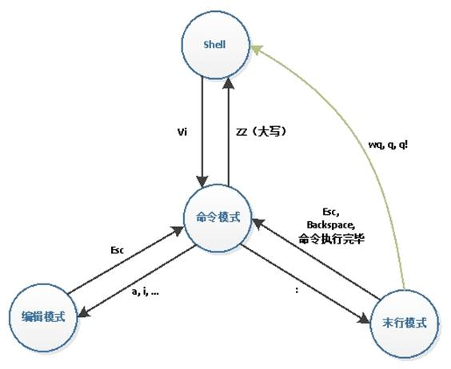
任何时候,不管用户处于何种模式,只要按一下ESC键,即可使vi进入命令模式。我们在shell环境(提示符为$)下输入启动vim命令，进入编辑器时，也是处于该模式下。
在命令模式下，用户可以输入各种合法的vi命令，用于管理自己的文档。此时从键盘上输入的任何字符都被当做编辑命令来解释，若输入的字符是合法的vi命令，则vi在接受用户命令之后完成相应的动作。但需注意的是，所输入的命令并不在屏幕上显示出来。若输入的字符不是vi的合法命令，vi会响铃报警。
在命令模式下输入插入命令i（I）、附加命令a（A） 、打开命令o（O）、替换命s（S）都可以进入文本输入模式，此时vi窗口的最后一行会显示“插入”。
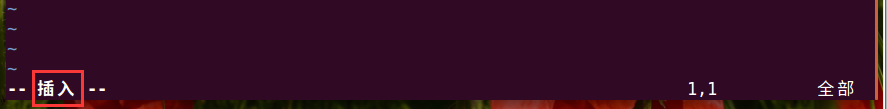
在该模式下,用户输入的任何字符都被vi当做文件内容保存起来，并将其显示在屏幕上。在文本输入过程中，若想回到命令模式下，按键ESC即可。
末行模式下，用户可以对文件进行一些附加处理。尽管命令模式下的命令可以完成很多功能，但要执行一些如字符串查找、替换、显示行号等操作还是必须要进入末行模式的。
在命令模式下，输入冒号即可进入末行模式。此时vi窗口的状态行会显示出冒号，等待用户输入命令。用户输入完成后，按回车执行，之后vi编辑器又自动返回到命令模式下。
deng@itcast:~/test$ vimtutor
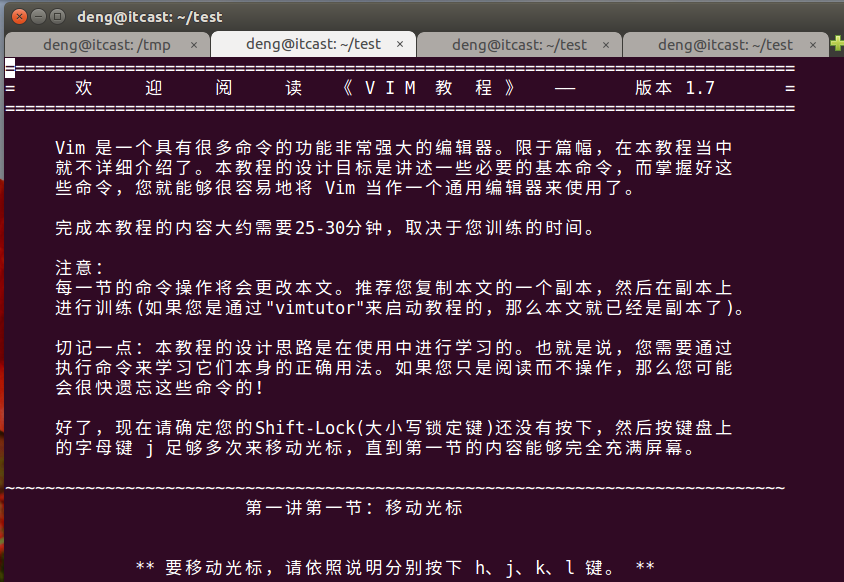
6.1 打开文件
vim filename：打开或新建文件，并将光标置于第一行行首，如果文件不存在，则会新建文件。
打开不存在文件：
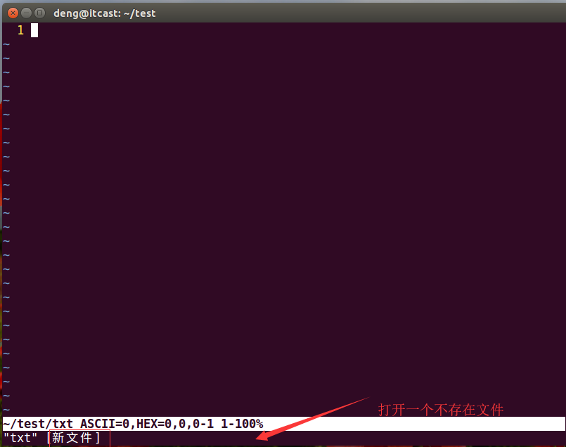
6.2 编辑文件
如果通过vi打开一个已经存在的文件，首先进入命令模式，此时输入的任何字符都被视为命令，不能输入内容。
在命令模式输入i
6.3 保存文件
一定要先退出插入模式(按Esc进入命令模式)，然后(小写状态下)，shift + zz （按住 “shift” + 按两下“z”键），或者（大写状态下：ZZ） 即可保存退出当前文件。
第一步：进入命令模式（ESC）
第二步：shifit + z z
1）切换到编辑模式
| 按键 | 功能 |
|---|---|
| i | 光标位置当前处插入文字 |
| I | 光标所在行首插入文字 |
| o(字母) | 光标下一行插入文字（新行） |
| O(字母) | 光标上一行插入文字（新行） |
| a | 光标位置右边插入文字 |
| A | 光标所在行尾插入文字 |
| s | 删除光标后边的字符，从光标当前位置插入 |
| S | 删除光标所在当前行，从行首插入 |
2) 光标移动
| 按键 | 功能 |
|---|---|
| Ctrl + f | 向前滚动一个屏幕 |
| Ctrl + b | 向后滚动一个屏幕 |
| gg | 到文件第一行行首 |
| G(大写) | 到文件最后一行行首，G必须为大写 |
| mG或mgg | 到指定行，m为目标行数 |
| 0(数字) | 光标移到到行首（第一个字符位置） |
| $ | 光标移到到行尾 |
| l(小写L) | 向右移动光标 |
| h | 向左移动光标 |
| k | 向上移动光标 |
| j | 向下移动光标 |
| ^ | 光标移到到行首（第一个有效字符位置） |
3）复制粘贴
| 按键 | 功能 |
|---|---|
| [n]yy | 复制从当前行开始的 n 行 |
| p | 把粘贴板上的内容插入到当前行 |
4）删除
| 按键 | 功能 |
|---|---|
| [n]x | 删除光标后 n 个字符 |
| [n]X | 删除光标前 n 个字符 |
| D | 删除光标所在开始到此行尾的字符 |
| [n]dd | 删除从当前行开始的 n 行（准确来讲，是剪切，剪切不粘贴即为删除） |
| dG | 删除光标所在开始到文件尾的所有字符 |
| dw | 删除光标开始位置的字,包含光标所在字符 |
| d0(0为数字) | 删除光标前本行所有内容,不包含光标所在字符 |
| dgg | 删除光标所在开始到文件首行第一个字符开始的所有字符 |
5）撤销恢复
| 按键 | 功能 |
|---|---|
| .(点) | 执行上一次操作 |
| u | 撤销前一个命令 |
| ctrl+r | 反撤销 |
| 100 + . | 执行上一次操作100次 |
6）保存退出
| 按键 | 功能 |
|---|---|
| ZZ(shift+z+z) | 保存退出 |
7）查找
| 按键 | 功能 |
|---|---|
| /字符串 | 从当前光标位置向下查找（n，N查找内容切换） |
| ?字符串 | 从当前光标位置向上查找（n，N查找内容切换） |
8）替换
| 按键 | 功能 |
|---|---|
| r | 替换当前字符 |
| R | 替换当前行光标后的字符(ESC退出替换模式) |
9）可视模式
| 按键 | 功能 |
|---|---|
| v | 按字符移动，选中文本，可配合h、j、k、l选择内容，使用d删除，使用y复制 |
| Shift + v | 行选（以行为单位）选中文本，可配合h、j、k、l选择内容，使用d删除，使用y复制 |
| Ctrl + v | 列选 选中文本，可配合h、j、k、l选择内容，使用d删除，使用y复制 |
1）保存退出
| 按键 | 功能 |
|---|---|
| :wq | 保存退出 |
| :x(小写) | 保存退出 |
| :w filename | 保存到指定文件 |
| :q | 退出，如果文件修改但没有保存，会提示无法退出 |
| :q! | 退出，不保存 |
all 表示所有
2）替换
| 按键 | 功能 |
|---|---|
| :s/abc/123/ | 光标所在行的第一个abc替换为123 |
| :s/abc/123/g | 光标所在行的所有abc替换为123 |
| :1,10s/abc/123/g | 将第一行至第10行之间的abc全部替换成123 |
| :%s/abc/123/g | 当前文件的所有abc替换为123 |
| :%s/abc/123/gc | 同上，但是每次替换需要用户确认 |
| :1,$s/abc/123/g | 当前文件的所有abc替换为123 |
3）分屏
| 按键 | 功能 |
|---|---|
| :sp | 当前文件水平分屏 |
| :vsp | 当前文件垂直分屏 |
| : sp 文件名 | 当前文件和另一个文件水平分屏 |
| : vsp 文件名 | 当前文件和另一个文件垂直分屏 |
| ctrl-w-w | 在多个窗口切换光标 |
| :wall/:wqall/:qall | 保存/保存退出/退出所有分屏窗口 |
| vim -O a.c b.c | 垂直分屏 |
| vim -o a.c b.c | 水平分屏 |
4) 其它用法(扩展)
| 按键 | 功能 |
|---|---|
| :!man 3 printf | 在vim中执行命令 （q退出） |
| :r !ls -l | 将ls -l执行的结果写入当前文件中 |
| :r /etc/passwd | 将/etc/passwd文件中的内容写入到当前文件中 |
| :w /tmp/txt | 将当前文件内容写入到/tmp/txt文件中 |
| :w! /tmp/txt | 强制将当前文件内容写入到/tmp/txt文件中 |
| :1,10s/^/\/\//g | 将第1行到10行行首添加// (^表示行首) /\/\转移字符 |
| :1,10s#^#//#g | 将第1行到10行行首添加// (#可以临时代替/ 分隔) |
| :%s/;/\r{\r\treturn0;\r}\r/g | 将;替换成{ return 0; } |
| :1,10s#//##g | 将第1行到10行行首去掉// (#可以临时代替/ 分隔) |
5) 配置文件
局部配置文件（推荐）
deng@itcast:~/share/2nd$ vim ~/.vimrc
全局配置文件:
deng@itcast:~/share/2nd$ sudo vim /etc/vim/vimrc
编辑器(如vi、记事本)是指我用它来写程序的（编辑代码），而我们写的代码语句，电脑是不懂的，我们需要把它转成电脑能懂的语句，编译器就是这样的转化工具。就是说，我们用编辑器编写程序，由编译器编译后才可以运行！
编译器是将易于编写、阅读和维护的高级计算机语言翻译为计算机能解读、运行的低级机器语言的程序。
gcc（GNU Compiler Collection，GNU 编译器套件），是由 GNU 开发的编程语言编译器。gcc原本作为GNU操作系统的官方编译器，现已被大多数类Unix操作系统（如Linux、BSD、Mac OS X等）采纳为标准的编译器，gcc同样适用于微软的Windows。
gcc最初用于编译C语言，随着项目的发展gcc已经成为了能够编译C、C++、Java、Ada、fortran、Object C、Object C++、Go语言的编译器大家族。
编译命令格式：
gcc [options] file...
g++ [options] file...
- 命令、选项和源文件之间使用空格分隔
- 一行命令中可以有零个、一个或多个选项
- 文件名可以包含文件的绝对路径，也可以使用相对路径
- 如果命令中不包含输出可执行文件的文件名，可执行文件的文件名会自动生成一个默认名，Linux平台为a.out，Windows平台为a.exe
gcc编译器从拿到一个c源文件到生成一个可执行程序，中间一共经历了四个步骤：
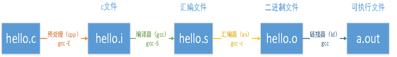
四个步骤并不是gcc独立完成的，而是在内部调用了其他工具，从而完成了整个工作流程：
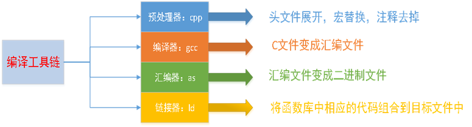
gcc工作的流程
deng@itcast:~/share/3rd/1gcc$ ls 1hello.c
第一步: 进行预处理
deng@itcast:~/share/3rd/1gcc$ gcc -E 1hello.c -o 1hello.i
第二步: 生成汇编文件
deng@itcast:~/share/3rd/1gcc$ gcc -S 1hello.i -o 1hello.s
第三步: 生成目标代码
deng@itcast:~/share/3rd/1gcc$ gcc -c 1hello.s -o 1hello.o
第四步: 生成可以执行文件
deng@itcast:~/share/3rd/1gcc$ gcc 1hello.o -o 1hello 第五步: 执行 deng@itcast:~/share/3rd/1gcc$ ./1hello hello itcast
直接将源文件生成一个可以执行文件
deng@itcast:~/share/3rd/1gcc$ gcc 1hello.c -o 1hello deng@itcast:~/share/3rd/1gcc$ ./1hello hello itcast
如果不指定输出文件名字, gcc编译器会生成一个默认的可以执行a.out
deng@itcast:~/share/3rd/1gcc$ gcc 1hello.c
deng@itcast:~/share/3rd/1gcc$ ls 1hello 1hello.c 1hello.i 1hello.o 1hello.s a.out deng@itcast:~/share/3rd/1gcc$ ./a.out
hello itcast
gcc常用选项
| 选项 | 作用 |
|---|---|
| -o file | 指定生成的输出文件名为file |
| -E | 只进行预处理 |
| -S(大写) | 只进行预处理和编译 |
| -c(小写) | 只进行预处理、编译和汇编 |
| -v / --version | 查看gcc版本号 |
| -g | 包含调试信息 |
| -On n=0~3 | 编译优化，n越大优化得越多 |
| -Wall | 提示更多警告信息 |
| -D | 编译时定义宏 |
显示所有的警告信息
gcc -Wall test.c
将警告信息当做错误处理
gcc -Wall -Werror test.c
测试程序(-D选项)：
x134int main(void)5{67 printf("SIZE: %d\n", SIZE);89 return 0;10}
deng@itcast:~/test$ gcc 2test.c -DSIZE=10
deng@itcast:~/test$ ./a.out
SIZE: 10
链接分为两种：静态链接、动态链接。
1）静态链接
静态链接：由链接器在链接时将库的内容加入到可执行程序中。
优点：
缺点：
2）动态链接
动态链接：连接器在链接时仅仅建立与所需库函数的之间的链接关系，在程序运行时才将所需资源调入可执行程序。
优点：
缺点：
3）静态、动态编译对比
前面我们编写的应用程序大量用到了标准库函数，系统默认采用动态链接的方式进行编译程序，若想采用静态编译，加入-static参数。
以下是分别采用动态编译、静态编译时文件对比：
测试程序(test.c)如下：
xxxxxxxxxx813int main(void)4{5 printf("hello world\n");67 return 0;8}编译：
deng@itcast:~/test$ gcc test.c -o test_share
deng@itcast:~/test$ gcc -static test.c -o test_static
结果对比：
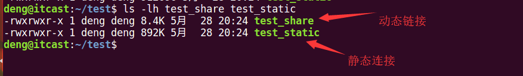
参考博客：静态链接库与动态链接库
所谓“程序库”，简单说，就是包含了数据和执行码的文件。其不能单独执行，可以作为其它执行程序的一部分来完成某些功能。
库的存在可以使得程序模块化，可以加快程序的再编译，可以实现代码重用,可以使得程序便于升级。
程序库可分静态库(static library)和共享库(shared library)。
静态库可以认为是一些目标代码的集合，是在可执行程序运行前就已经加入到执行码中，成为执行程序的一部分。
按照习惯,一般以“.a”做为文件后缀名。静态库的命名一般分为三个部分：
所以最终的静态库的名字应该为：libxxx.a
1） 静态库制作
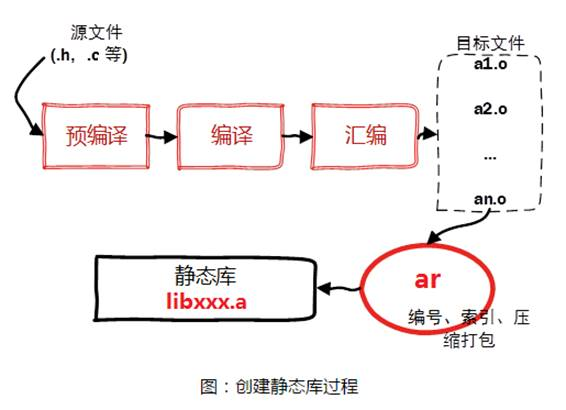
步骤1：将c源文件生成对应的.o文件
deng@itcast:~/test/3static_lib$ gcc -c add.c -o add.o
deng@itcast:~/test/3static_lib$ gcc -c sub.c -o sub.o deng@itcast:~/test/3static_lib$ gcc -c mul.c -o mul.o deng@itcast:~/test/3static_lib$ gcc -c div.c -o div.o
步骤2：使用打包工具ar将准备好的.o文件打包为.a文件 libtest.a
deng@itcast:~/test/3static_lib$ ar -rcs libtest.a add.o sub.o mul.o div.o
在使用ar工具是时候需要添加参数：rcs
2）静态库使用
静态库制作完成之后，需要将.a文件和头文件一起发布给用户。
假设测试文件为main.c，静态库文件为libtest.a头文件为head.h
编译命令：
deng@itcast:~/test/4static_test$ gcc test.c -L./ -I./ -ltest -o test
参数说明：
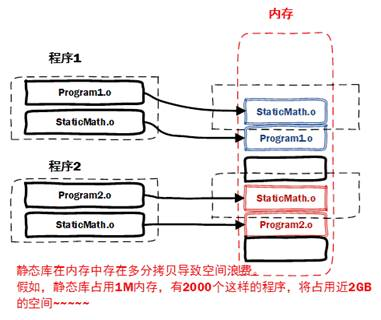
共享库在程序编译时并不会被连接到目标代码中，而是在程序运行是才被载入。不同的应用程序如果调用相同的库，那么在内存里只需要有一份该共享库的实例，规避了空间浪费问题。
动态库在程序运行是才被载入，也解决了静态库对程序的更新、部署和发布页会带来麻烦。用户只需要更新动态库即可，增量更新。
按照习惯,一般以“.so”做为文件后缀名。共享库的命名一般分为三个部分：
所以最终的动态库的名字应该为：libxxx.so
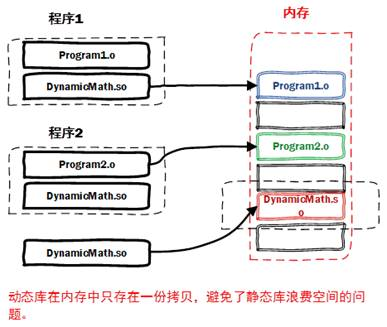
1）动态库制作
步骤一：生成目标文件，此时要加编译选项：-fPIC（fpic）
deng@itcast:~/test/5share_lib$ gcc -fPIC -c add.c
deng@itcast:~/test/5share_lib$ gcc -fPIC -c sub.c deng@itcast:~/test/5share_lib$ gcc -fPIC -c mul.c deng@itcast:~/test/5share_lib$ gcc -fPIC -c div.c
参数：-fPIC 创建与地址无关的编译程序（pic，position independent code），是为了能够在多个应用程序间共享。
步骤二：生成共享库，此时要加链接器选项: -shared（指定生成动态链接库）
deng@itcast:~/test/5share_lib$ gcc -shared add.o sub.o mul.o div.o -o libtest.so
步骤三: 通过nm命令查看对应的函数
deng@itcast:~/test/5share_lib$ nm libtest.so | grep add 00000000000006b0 T add deng@itcast:~/test/5share_lib$ nm libtest.so | grep sub 00000000000006c4 T sub
ldd查看可执行文件的依赖的动态库
deng@itcast:~/share/3rd/2share_test$ ldd test linux-vdso.so.1 => (0x00007ffcf89d4000) libtest.so => /lib/libtest.so (0x00007f81b5612000) libc.so.6 => /lib/x86_64-linux-gnu/libc.so.6 (0x00007f81b5248000) /lib64/ld-linux-x86-64.so.2 (0x00005562d0cff000)
2）动态库测试
引用动态库编译成可执行文件（跟静态库方式一样）
deng@itcast:~/test/6share_test$ gcc test.c -L. -I. -ltest (-I. 大写i -ltest 小写L)
然后运行：./a.out，发现竟然报错了！！！
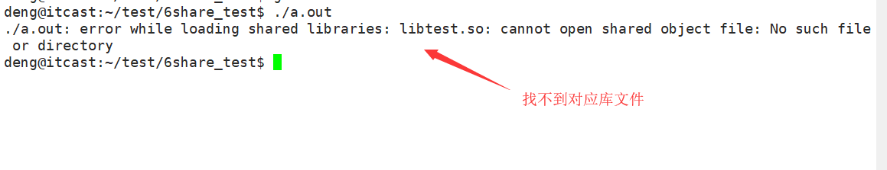
3）如何让系统找到动态库
export LD_LIBRARY_PATH=$LD_LIBRARY_PATH:库路径
永久设置,把export LD_LIBRARY_PATH=$LD_LIBRARY_PATH:库路径，设置到~/.bashrc或者 /etc/profile文件中
deng@itcast:~/share/3rd/2share_test$ vim ~/.bashrc
最后一行添加如下内容:
export LD_LIBRARY_PATH=$LD_LIBRARY_PATH:/home/deng/share/3rd/2share_test
使环境变量生效
deng@itcast:~/share/3rd/2share_test$ source ~/.bashrc deng@itcast:~/share/3rd/2share_test$ ./test
a + b = 20 a - b = 10
将其添加到 /etc/ld.so.conf文件中
编辑/etc/ld.so.conf文件，加入库文件所在目录的路径
运行sudo ldconfig -v，该命令会重建/etc/ld.so.cache文件
deng@itcast:~/share/3rd/2share_test$ sudo vim /etc/ld.so.conf
文件最后添加动态库路径(绝对路径)
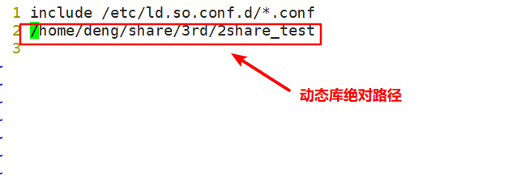
使生效
deng@itcast:~/share/3rd/2share_test$ sudo ldconfig -v
使用符号链接， 但是一定要使用绝对路径
deng@itcast:~/test/6share_test$ sudo ln -s /home/deng/test/6share_test/libtest.so /lib/libtest.so
GNU工具集中的调试器是GDB（GNU Debugger），该程序是一个交互式工具，工作在字符模式。
除gdb外，linux下比较有名的调试器还有xxgdb, ddd, kgdb, ups。
GDB主要帮忙你完成下面四个方面的功能：
一般来说GDB主要调试的是C/C++的程序。要调试C/C++的程序，首先在编译时，我们必须要把调试信息加到可执行文件中。使用编译器（cc/gcc/g++）的 -g 参数可以做到这一点。如：
gcc -g hello.c -o hello
g++ -g hello.cpp -o hello
如果没有-g，你将看不见程序的函数名、变量名，所代替的全是运行时的内存地址。
启动gdb：gdb program
program 也就是你的执行文件，一般在当前目录下。
设置运行参数
set args 可指定运行时参数。（如：set args 10 20 30 40 50 ）
show args 命令可以查看设置好的运行参数。
启动程序
run： 程序开始执行，如果有断点，停在第一个断点处
start： 程序向下执行一行。
用list命令来打印程序的源代码。默认打印10行。
Ø list linenum： 打印第linenm行的上下文内容.
Ø list function： 显示函数名为function的函数的源程序。
Ø list： 显示当前行后面的源程序。
Ø list -： 显示当前行前面的源程序。
一般是打印当前行的上5行和下5行，如果显示函数是是上2行下8行，默认是10行，当然，你也可以定制显示的范围，使用下面命令可以设置一次显示源程序的行数。
Ø set listsize count：设置一次显示源代码的行数。
Ø show listsize： 查看当前listsize的设置。
1）简单断点
break 设置断点，可以简写为b
Ø b 10 设置断点，在源程序第10行
Ø b func 设置断点，在func函数入口处
2）多文件设置断点
C++中可以使用class::function或function(type,type)格式来指定函数名。
如果有名称空间，可以使用namespace::class::function或者function(type,type)格式来指定函数名。
Ø break filename:linenum -- 在源文件filename的linenum行处停住
Ø break filename:function -- 在源文件filename的function函数的入口处停住
Ø break class::function或function(type,type) -- 在类class的function函数的入口处停住
Ø break namespace::class::function -- 在名称空间为namespace的类class的function函数的入口处停住
3）查询所有断点
一般来说，为断点设置一个条件，我们使用if关键词，后面跟其断点条件。
设置一个条件断点：
b test.c:8 if Value == 5
1）delete [range...] 删除指定的断点，其简写命令为d。
2） disable [range...] 使指定断点无效，简写命令是dis。
如果什么都不指定，表示disable所有的停止点。
3） enable [range...] 使无效断点生效，简写命令是ena。
如果什么都不指定，表示enable所有的停止点。
1）查看运行时数据
print 打印变量、字符串、表达式等的值，可简写为p
p count 打印count的值
你可以设置一些自动显示的变量，当程序停住时，或是在你单步跟踪时，这些变量会自动显示。相关的GDB命令是display。
1）ptype width -- 查看变量width的类型
type = double
2）p width -- 打印变量width 的值
$4 = 13
你可以使用set var命令来告诉GDB，width不是你GDB的参数，而是程序的变量名，如：
set var width=47 // 将变量var值设置为47
在你改变程序变量取值时，最好都使用set var格式的GDB命令